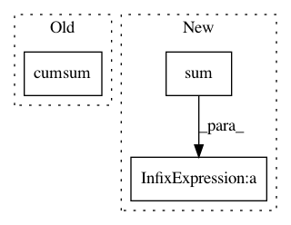

fd76e96ce1a9718be1ae141c5f3cabddf48ca85f,pymc3/distributions/transforms.py,StickBreaking,forward,#StickBreaking#Any#,446
Before Change
x = x_.T
// reverse cumsum
x0 = x[:-1]
s = tt.extra_ops.cumsum(x0[::-1], 0)[::-1] + x[-1]
z = x0 / s
Km1 = x.shape[0] - 1
k = tt.arange(Km1)[(slice(None),) + (None,) * (x.ndim - 1)]
After Change
x = x_.T
n = x.shape[0]
lx = tt.log(x)
shift = tt.sum(lx, 0, keepdims=True) / n
y = lx[:-1] - shift
return floatX(y.T)
def forward_val(self, x_, point=None):
In pattern: SUPERPATTERN
Frequency: 3
Non-data size: 3
Instances
Project Name: pymc-devs/pymc3
Commit Name: fd76e96ce1a9718be1ae141c5f3cabddf48ca85f
Time: 2020-09-27
Author: dominik.otto@izi.fraunhofer.de
File Name: pymc3/distributions/transforms.py
Class Name: StickBreaking
Method Name: forward
Project Name: pymc-devs/pymc3
Commit Name: fd76e96ce1a9718be1ae141c5f3cabddf48ca85f
Time: 2020-09-27
Author: dominik.otto@izi.fraunhofer.de
File Name: pymc3/distributions/transforms.py
Class Name: StickBreaking
Method Name: forward_val
Project Name: arviz-devs/arviz
Commit Name: bca224fc3805ba42a654b9b914226313342d403f
Time: 2019-02-06
Author: aloctavodia@gmail.com
File Name: arviz/plots/kdeplot.py
Class Name:
Method Name: plot_kde